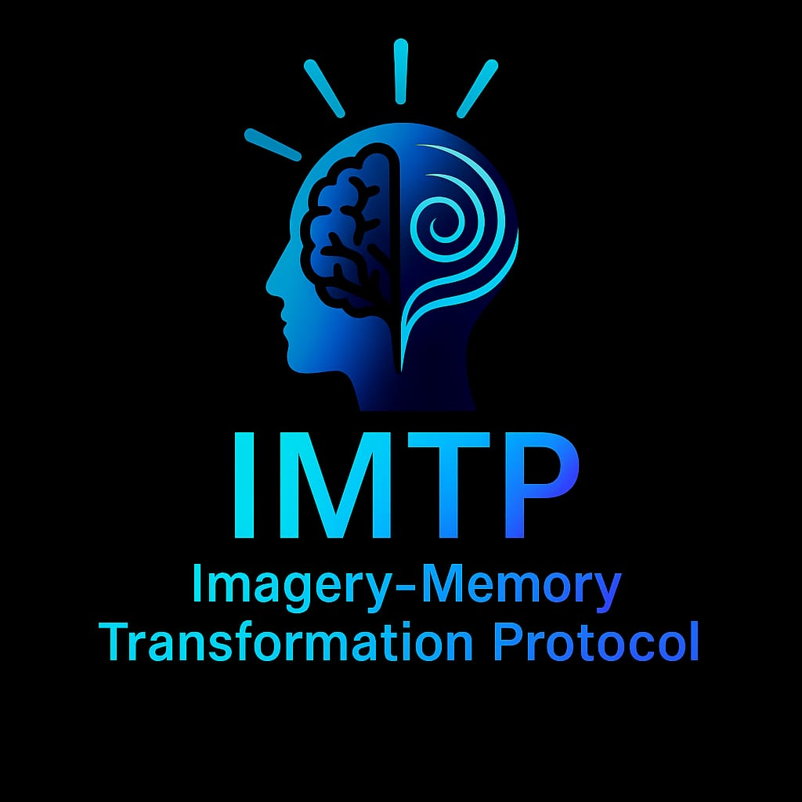
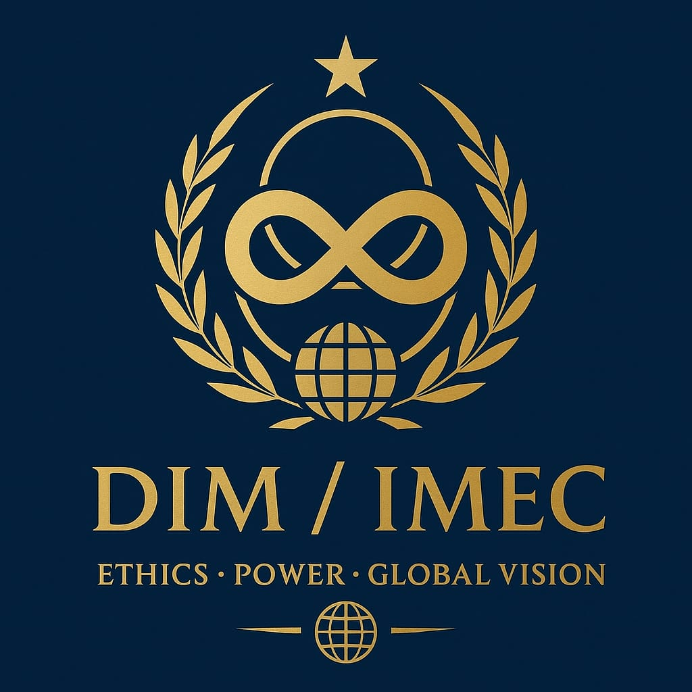

The Trauma Code
Travma katmanları, zihinsel işlemleme ve içsel dönüşüm üzerine kurulu çalışma.
AmazonKlinik psikoloji, bilinç ve inanç sistemleri üzerine çalışan bir araştırmacı. Travma, algı ve insan davranışı üzerine kuramsal ve uygulamalı çalışmalar.

Klinik psikoloji, bilinç çalışmaları ve din felsefesi ekseninde çalışan araştırmacı ve yazar.
Travma katmanları, zihinsel işlemleme ve içsel dönüşüm üzerine kurulu çalışma.
Amazon
İnanç sistemleri, anlam üretimi ve bilinç üzerine düşünsel çalışma.
Amazon
Travma, ifade ve içsel kırılma üzerine odaklanan çalışma.
Amazon
Duygusal yapı, ilişki dinamikleri ve içsel denge üzerine çalışma.
Amazon
Yakınlık, duygu ve insan ilişkileri üzerine kavramsal çalışma.
Amazon
Trauma ProtocolTravmanın yanlış tehlike algısı üzerinden yeniden işlendiği, hafıza ve duygu entegrasyonuna dayalı dönüşüm protokolü.

Consciousness ModelBilinç, etik ve karar mekanizmaları arasındaki ilişkiyi açıklayan çok katmanlı teorik model.
Research Line
Algı, inanç, duygu ve karar zincirinin insan davranışı üzerindeki etkisini inceleyen araştırma hattı.